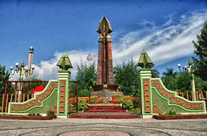
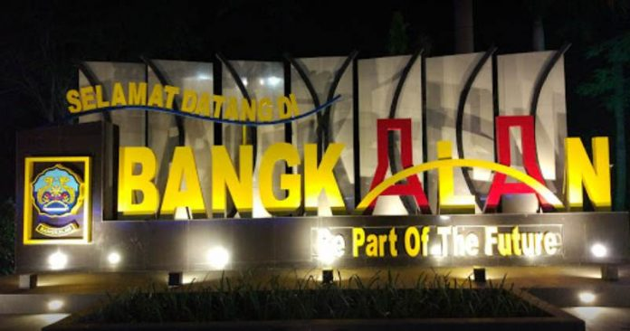

sumenep

Kota Sumenep adalah sebuah kecamatan di Kabupaten Sumenep, Provinsi Jawa Timur, Indonesia. Daerah ini terletak di Pulau Madura. Kota Sumenep adalah pusat pemerintahan Kabupaten Sumenep. Di kota ini terdapat beberapa bangunan bersejarah yang erat hubungannya dengan Karaton (Kerajaan) Sumenep pada masa lampau, antara lain: Asta Tinggi Sumenep (makam raja-raja dan keluarganya), Karaton Sumenep (istana, saat ini terletak di kompleks kediaman resmi Bupati Sumenep), Benteng Kali Mo'o (saat ini hanya tersisa pagarnya), Taman Sare(dahulu kolam pemandian di kompleks istana, saat ini terbuka untuk umum).
pamekasan

Kabupaten Pamekasan adalah sebuah kabupaten di Pulau Madura, Provinsi Jawa Timur, Indonesia. Ibu kotanya adalah Pamekasan. Kabupaten ini berbatasan dengan Laut Jawa di utara, Selat Madura di selatan, Kabupaten Sampang di barat, dan Kabupaten Sumenep di timur. Kabupaten Pamekasan terdiri atas 13 kecamatan, yang dibagi lagi atas 178 desa dan 11 kelurahan. Pusat pemerintahannya ada di Kecamatan Pamekasan.
sampang
Asal Usul Kabupaten Sampang - Kabupaten Sampang adalah Kota yang berada di Pulau Madura. Di Kota tersebut banyak tempat wisata yang sangat bagus seperti Pantai Nepa yang didekatnya juga ada hutan kera dan ada juga Pantai Camplong dengan segala keindahan didalamnya. Sakera pernah mengunjungi Kota Sampang bareng teman-teman Plat-M [Blogger Madura] dengan mengunjungi tempat pariwisata diatas dan mencicipi kuliner khas Sampang yaitu Bebek Songkem. Berikut adalah cerita mengenai asal muasal serta sejarah adanya Kabupaten (kota) Sampang.
bangkalan
Kabupaten Bangkalan (Pegon: بَڠْكَلَنْ/بَڠْكَلَانْ) adalah sebuah kabupaten di Pulau Madura, Provinsi Jawa Timur, Indonesia. Ibu kotanya adalah Bangkalan. Kabupaten ini terletak di ujung paling barat Pulau Madura; berbatasan dengan Laut Jawa di utara, Kabupaten Sampang di timur serta Selat Madura di selatan dan barat. Pelabuhan Kamal merupakan pintu gerbang Madura dari Jawa, di mana terdapat layanan kapal feri yang menghubungkan Madura dengan Surabaya (Pelabuhan Ujung). Saat ini telah beroperasi Jembatan Suramadu (Surabaya-Madura) yang merupakan jembatan terpanjang di Indonesia. Kabupaten Bangkalan merupakan salah satu wilayah yang masuk dalam kawasan metropolitan Surabaya, yaitu Gerbangkertosusila. Kabupaten Bangkalan terdiri atas 18 kecamatan yang dibagi lagi atas sejumlah 273 desa dan 8 kelurahan. Pusat pemerintahannya berada di Kecamatan Bangkalan.